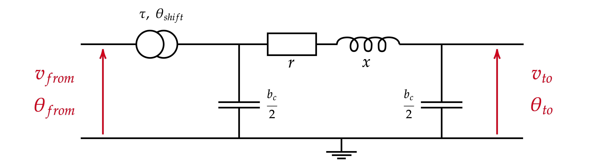

Graph Neural Solver for Power Systems
Overview
Electric power is a vital part of our modern societies. Companies called TSOs (Transmission System Operators) are in charge of managing the power transmission infrastructure. In order to ensure that power grids are in security, one needs to perform expensive Power Flow computations (usually based on a Newton-Raphson method). Moreover, these computations are sometimes over precise (convergence criterium below XXXX), while the uncertainty over the input data is usually above YYYY. Therefore, we aim at developping methods that provide a more suitable compromise between computational speed and precision.
This post is based on the article Graph Neural Solver for Power Systems, and aims at providing some insights about the Power Flow problem, Graph Neural Networks and our proposed architecture.
Power Flow
The power flow problem is a well understood and studied problem. Knowing the amount of power that is being consumed, the amount of power that is being produced, and the way electrical nodes are interconnected through power lines, the goal is to deduce the actual flows through each line.
Power Lines

Here are active flows :
\[ p_{from \rightarrow to} = v_{from} \times v_{to} \times y \times \frac{1}{\tau} \times \sin(\theta_{from} - \theta_{to} - \delta - \theta_{shift}) + \left( \frac{v_{from}}{\tau} \right)^2 \times y \times \sin(\delta) \]
\[ p_{to \rightarrow from} = v_{to} \times v_{from} \times y \times \frac{1}{\tau} \times \sin(\theta_{to} - \theta_{from} - \delta + \theta_{shift}) + \left( v_{to} \right)^2 \times y \times \sin(\delta) \]
and the active flows :
\[ q_{from \rightarrow to} = - v_{from} \times v_{to} \times y \times \frac{1}{\tau} \times \cos(\theta_{from} - \theta_{to} - \delta - \theta_{shift}) + \left( \frac{v_{from}}{\tau} \right)^2 \times (y \times \cos(\delta)-\frac{b_{c}}{2}) \]
\[ q_{to \rightarrow from} = - v_{to} \times v_{from} \times y \times \frac{1}{\tau} \times \cos(\theta_{to} - \theta_{from} - \delta + \theta_{shift}) + \left( v_{to} \right)^2 \times ( y \times \cos(\delta) - \frac{b}{2}) \]
Energy conservation
On our model of power grid (keeping in mind that this is just a model), we have three different types of objects:
- power lines (power transport);
- generators (power productions);
- loads (power consumptions).
\[ 0 = -p_{d,\alpha} -p_{\alpha \rightarrow \beta} -p_{\alpha \rightarrow \gamma} \] \[ 0 = -q_{d,\alpha} -q_{\alpha \rightarrow \beta} -q_{\alpha \rightarrow \gamma} \]